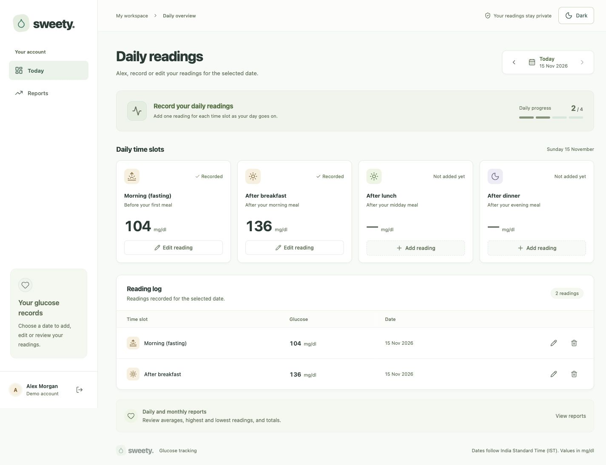
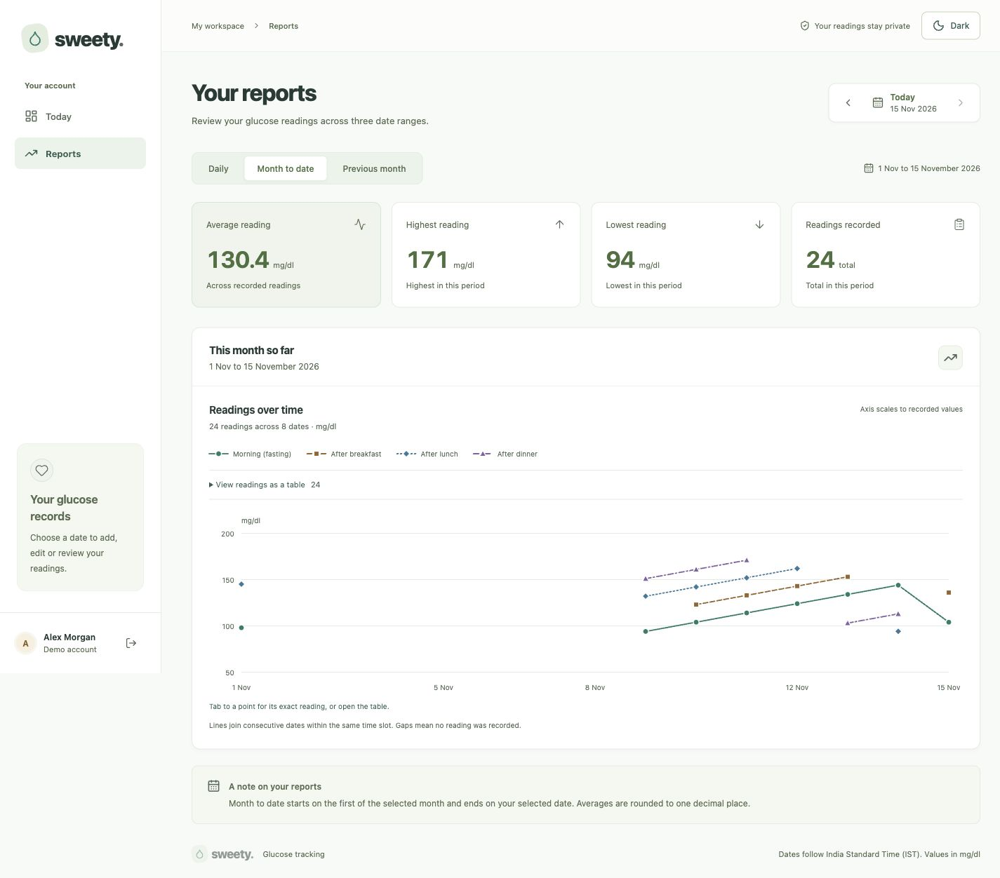
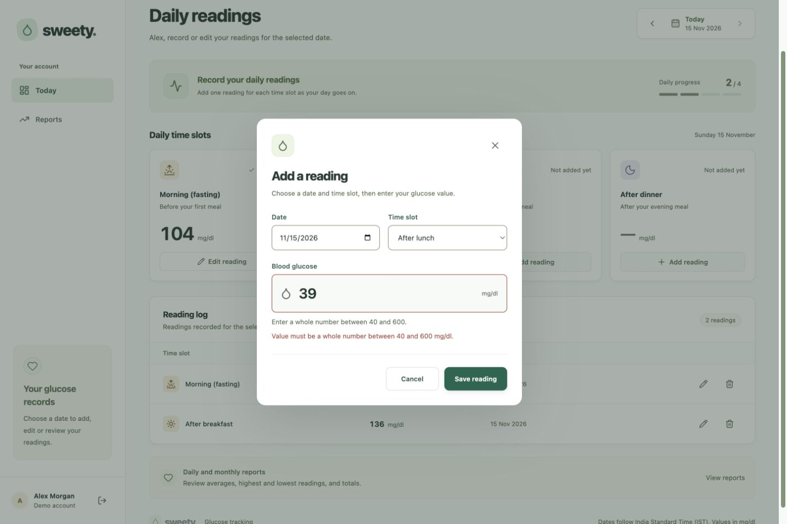
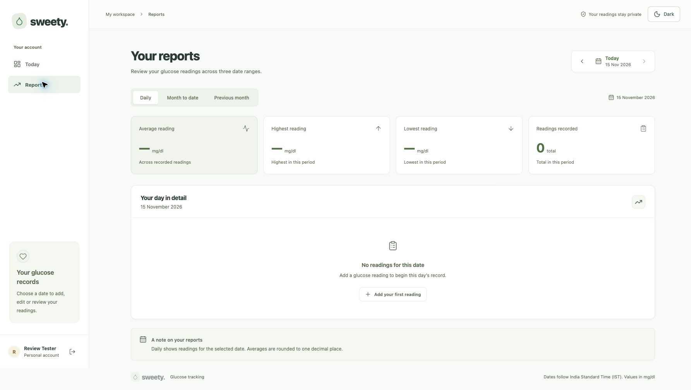
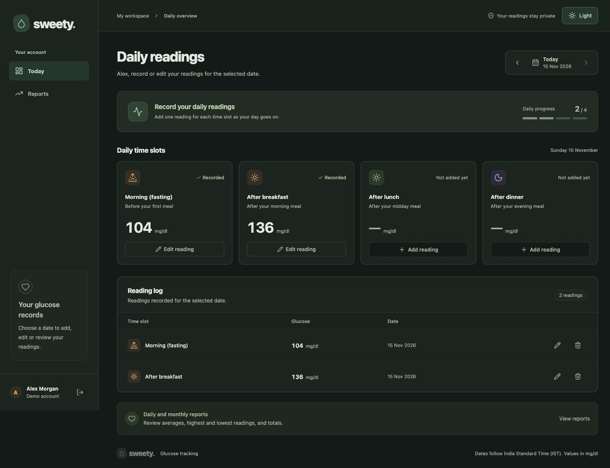
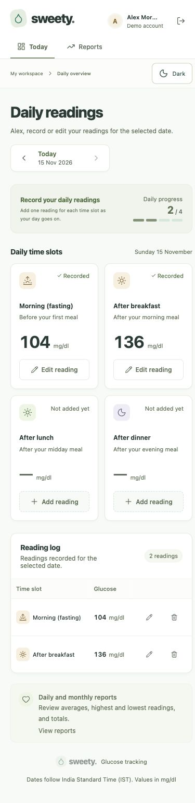
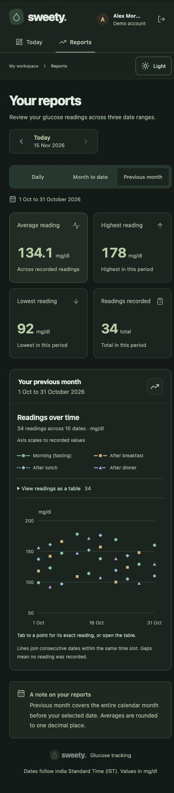

Sweety project demo
A glucose tracker by Pranav Anand, built with React, Express and PostgreSQL. The two-minute walkthrough covers sign-in, readings and reports.
Screenshots
Select an image to open the full screenshot. All readings shown are fictional demo data.













